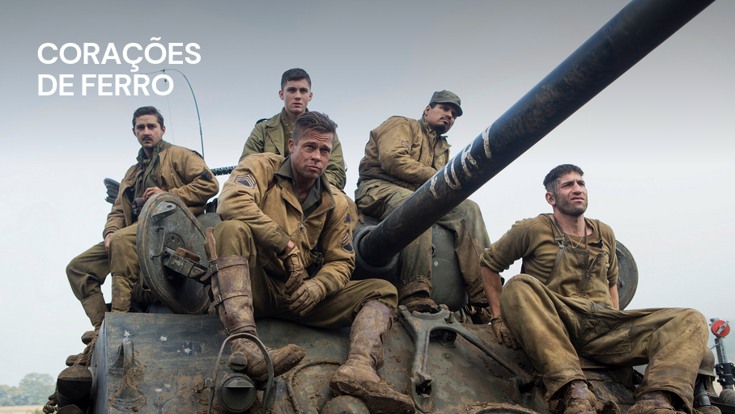

Corações de ferro
Final da 2ª Guerra Mundial e os soldados precisam ingressar na Alemanha para atacar o exército alemão. Com Brad Pitt, Logan Lerman, Shia LaBeouf, Jon Bernthal (o Justiceiro do seriado “Demolidor”) e Michael Peña fazem parte da equipe que atua no tanque M4 Sherman apelidado de “Fury” e tem a missão de puxar o ataque.
O filme nos mostra as dificuldades de um soldado em enfrentar uma guerra. Os que chegam no início e não se preparam para o que vão encontrar acabam sofrendo com a adaptação, desde o primeiro tiro até as decisões mais difíceis. Isto vemos claramente no personagem vivido por Logan Lerman, um rapaz sem a menor experiência em guerra, que é jogado para dentro de um tanque, sem ter noção alguma do que fazer. Assim como ele, muitas vezes, não sabemos como reagir em nossas batalhas pessoais, porque não nos preparamos para elas, apenas entramos (algumas vezes confiando em nossas forças).
Por outro lado, no filme vemos quatro companheiros do jovem Norman, veteranos e endurecidos de guerra que decidiram confiar em si mesmos e no tanque “Fury“, aquele que se tornou sua casa. Durante o desenrolar de “Corações de ferro” vemos que eles preferiram tornar seus corações duros para enfrentar tudo o que vinha pela frente. Amigos que morreram, inimigos que poderiam matá-los sem pensar duas vezes, o risco da morte a cada nova incursão, tudo isso fez com que preferissem tornar seus corações duros para o dia a dia, pois acharam que seria a única forma de lidar com a guerra. Estes escolheram enfrentar as batalhas confiando em suas forças.
E não menos importante existe o personagem vivido por Shia LaBeouf, que já pelo nome e apelido já se vê que ter algo diferente – Boyd “Bible” Swan. Este personagem é diferenciado de todos e podemos notar isso do início ao fim. Ele ainda é um soldado como os demais, mas não age como eles. Vale a pena acompanhar suas atitudes e palavras e comparar com os outros soldados do tanque.
Alguns links para comunidades ativas:
Contexto Histórico
A trama se passa em abril de 1945, nos últimos dias do conflito, quando os Aliados estão avançando para o coração da Alemanha nazista. No entanto, a resistência inimiga ainda é forte, e os combates são ferozes.
O filme faz um retrato autêntico das condições extremas enfrentadas pelos soldados, com o uso de tanques Sherman, a principal arma blindada das forças americanas na guerra.

Ficha Técnica
| Gênero: | Ação |
|---|---|
| Direção: | David Ayer |
| Roteiro: | David Ayer |
| Elenco: | Alicia von Rittberg, Anamaria Marinca, Brad Pitt, Brad William Henke, Christopher Maleki, Daniel Betts, Edin Gali, Jason Isaacs, Jim Parrack, Jon Bernthal, Kevin Strom, Kevin Vance, Laurence Spellman, Logan Lerman, Michael Peña, Scott Eastwood, Shia LaBeouf, Xavier Samuel |
| Produção: | Bill Block, David Ayer, Ethan Smith, John Lesher |
| Trilha Sonora: | Steven Price |
| Duração: | 134 min. |
| Ano: | 2014 |
| País: | Estados Unidos |
| Estreia: | 05/02/2015 (Brasil) |
| Distribuidora: | Sony Pictures |
| Estúdio: | Columbia Pictures / Crave Films / Grisbi Productions / Huayi Brothers Media / LStar Capital / QED International |
| Classificação: | 16 anos |